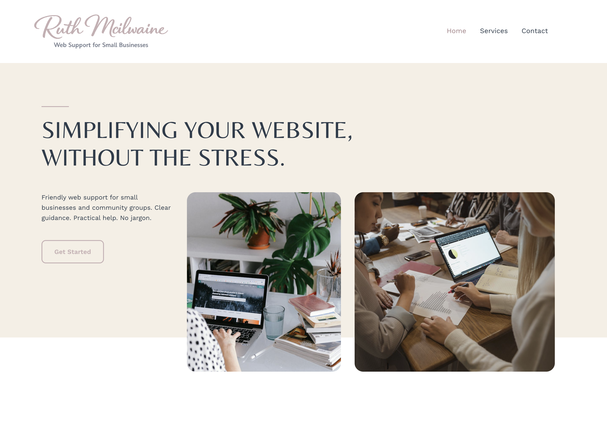

Exploring UX, CMS structure, and hosting workflows through a self-hosted WordPress environment.

This project was created to explore usability, accessibility, performance, and search visibility within a WordPress CMS environment, alongside practical hosting and deployment considerations.
The focus was on understanding how structure, navigation, and content organisation impact user experience, rather than visual design alone.
This project strengthened my understanding of WordPress as a CMS system rather than just a publishing tool, particularly in relation to structure, usability, and content management workflows.
It reinforced a practical, systems-based approach to building and maintaining websites, with a focus on clarity, maintainability, and user experience.